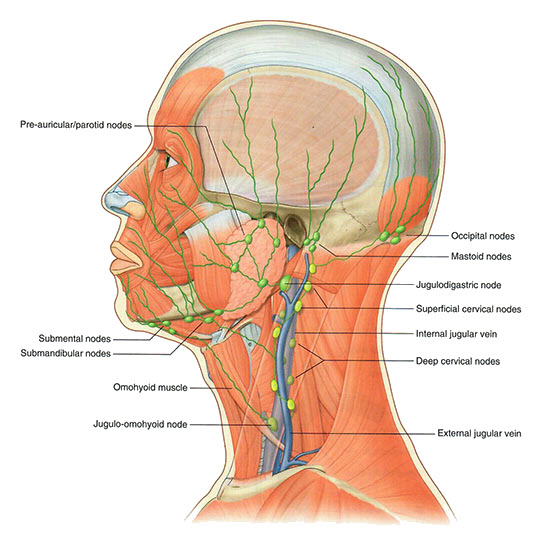
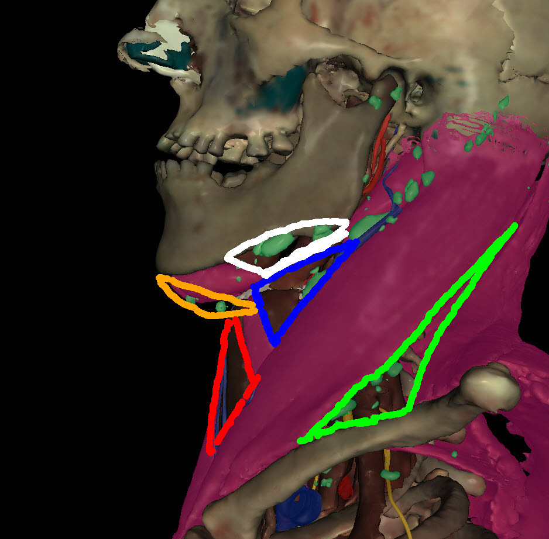
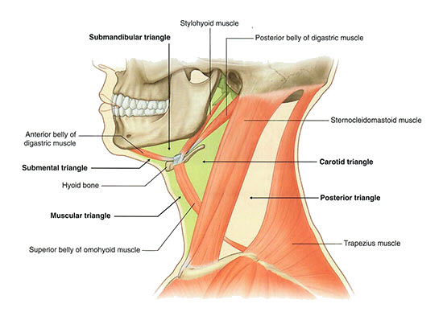

Anterior Triangle of the Neck: Module 1 - Page 4 of 4
×

|  |
| 🔍 Lymph nodes |
Lymphatics
| Rotate to the lateral view of the neck. | |
| Add the lymph nodes of the neck. |
Now we will highlight the neck muscles that define the Neck triangles
| Add the sternocleidomastoid. | |
| Add the trapezius. | |
| Highlight the digastric. | |
| Add the omohyoid. |
Demonstrate your knowledge! |
| Trace the 5 triangles of the neck and name the boundaries for each triangle. |
| Need help? Click here: |
|
. Refer to the drawing above for deliniation of the 5 triangles: . Anterior triangle is composed of 4 triangles, defined in the following way:
The posterior triangle is formed by one triangle, defined in the following way:
|